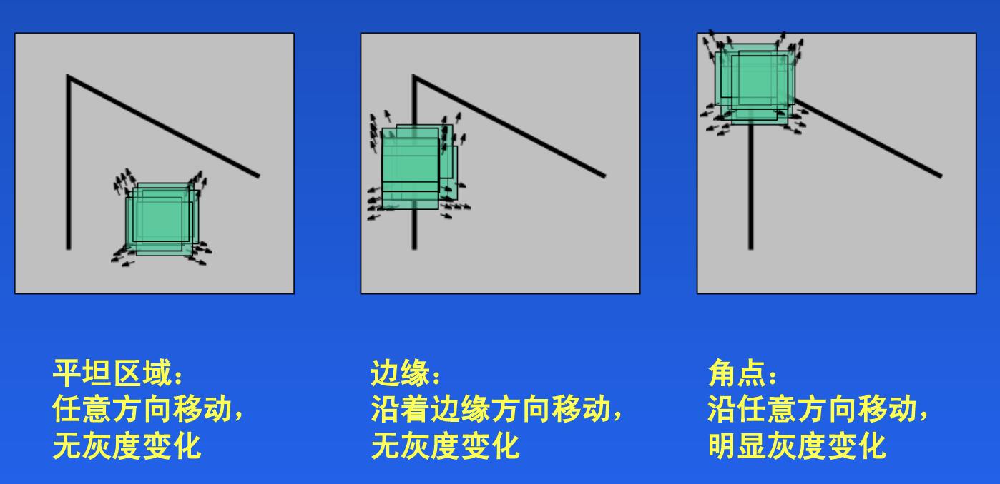
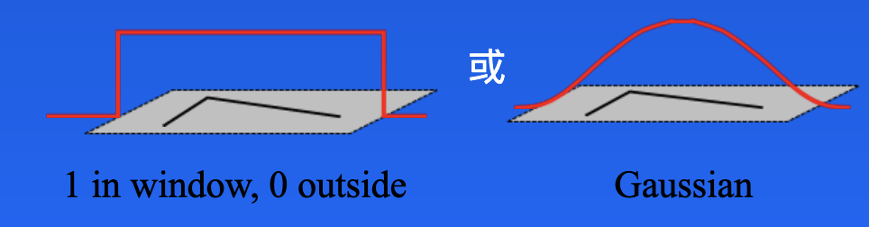
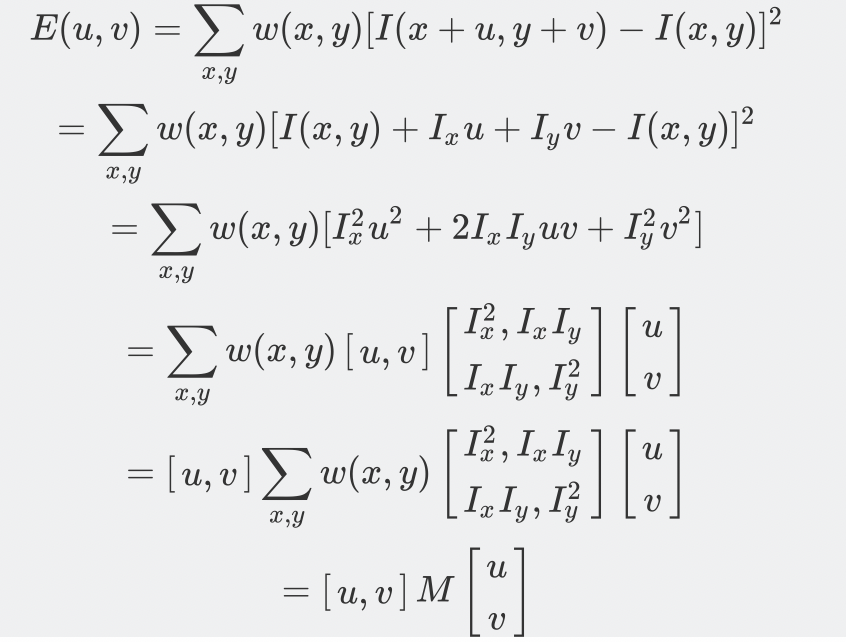
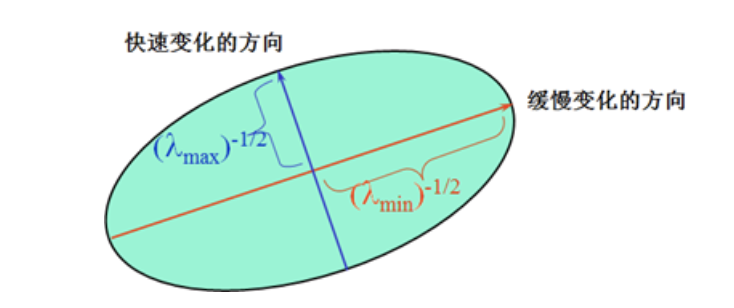
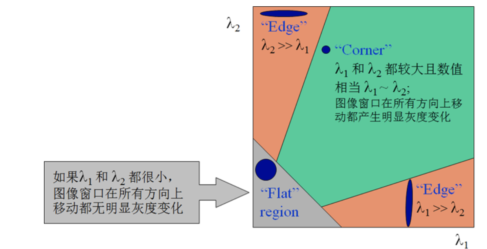
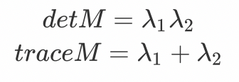
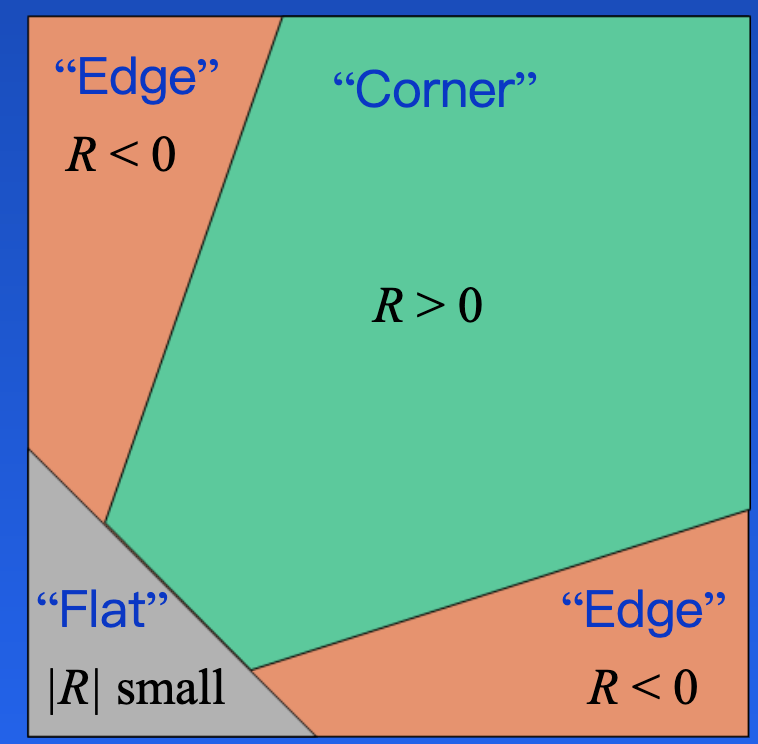
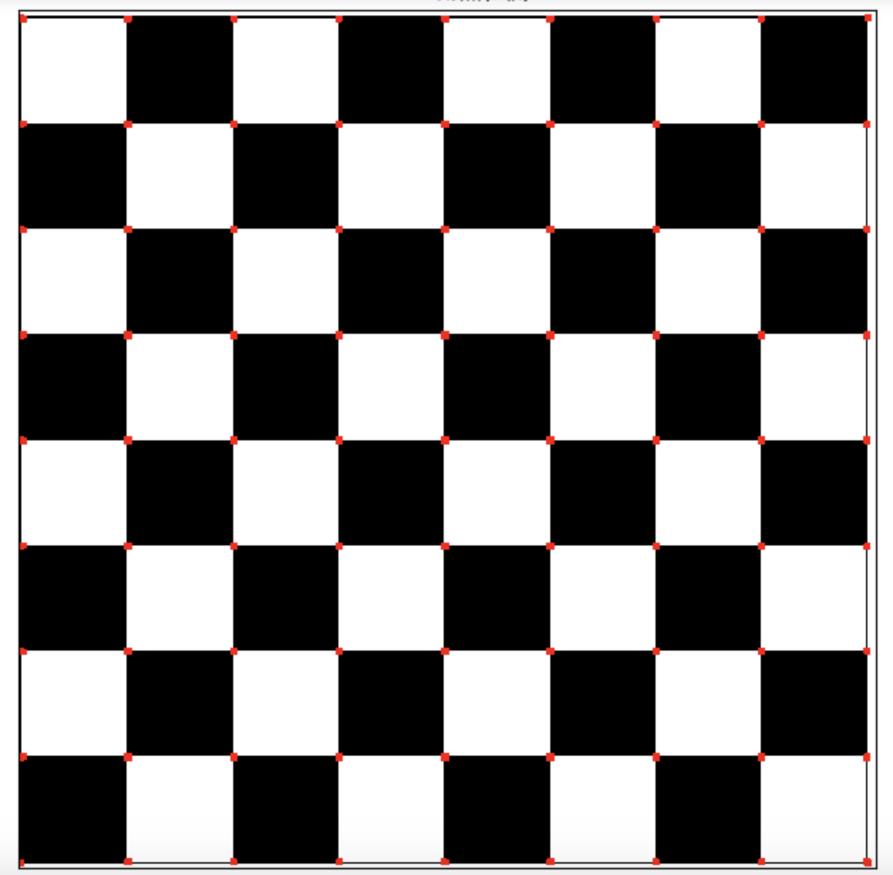
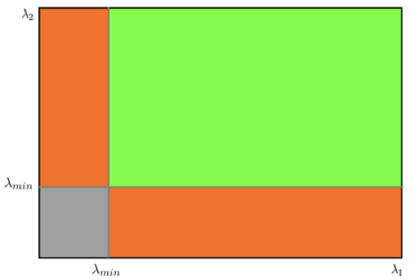
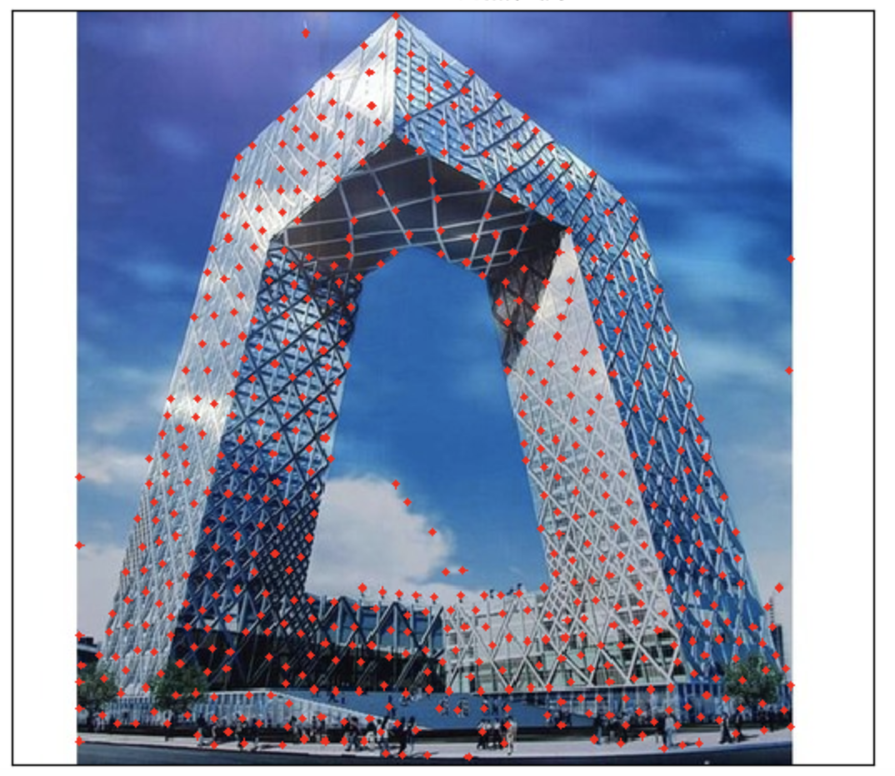

Harris和Shi-Tomas算法
学习目标
- 理解Harris和Shi-Tomasi算法的原理
- 能够利用Harris和Shi-Tomasi进行角点检测
1 Harris角点检测
1.1 原理
Harris角点检测的思想是通过图像的局部的小窗口观察图像，角点的特征是窗口沿任意方向移动都会导致图像灰度的明显变化，如下图所示：

将上述思想转换为数学形式，即将局部窗口向各个方向移动并计算所有灰度差异的总和，表达式如下： 其中是局部窗口的图像灰度，是平移后的图像灰度，是窗口函数，该可以是矩形窗口，也可以是对每一个像素赋予不同权重的高斯窗口，如下所示：

角点检测中使的值最大。利用一阶泰勒展开有： 其中和 是沿x和y方向的导数，可用sobel算子计算。
推导如下：

矩阵决定了的取值，下面我们利用来求角点，是和的二次项函数，可以表示成椭圆的形状，椭圆的长短半轴由的特征值和决定，方向由特征矢量决定，如下图所示：

椭圆函数特征值与图像中的角点、直线（边缘）和平面之间的关系如下图所示。

共可分为三种情况：
- 图像中的直线。一个特征值大，另一个特征值小，λ1>>λ2或 λ2>>λ1。椭圆函数值在某一方向上大，在其他方向上小。
- 图像中的平面。两个特征值都小，且近似相等；椭圆函数数值在各个方向上都小。
- 图像中的角点。两个特征值都大，且近似相等，椭圆函数在所有方向都增大
Harris给出的角点计算方法并不需要计算具体的特征值，而是计算一个角点响应值来判断角点。的计算公式为： 式中，detM为矩阵M的行列式；traceM为矩阵M的迹；α为常数，取值范围为0.04~0.06。事实上，特征是隐含在detM和traceM中，因为:

那我们怎么判断角点呢？如下图所示：
- 当R为大数值的正数时是角点
- 当R为大数值的负数时是边界
- 当R为小数是认为是平坦区域
1.2 实现
在OpenCV中实现Hariis检测使用的API是：
dst=cv.cornerHarris(src, blockSize, ksize, k)
参数：
img：数据类型为 float32 的输入图像。
blockSize：角点检测中要考虑的邻域大小。
ksize：sobel求导使用的核大小
k ：角点检测方程中的自由参数，取值参数为 [0.04，0.06].
示例：
import cv2 as cv
import numpy as np
import matplotlib.pyplot as plt
# 1 读取图像，并转换成灰度图像
img = cv.imread('./image/chessboard.jpg')
gray = cv.cvtColor(img, cv.COLOR_BGR2GRAY)
# 2 角点检测
# 2.1 输入图像必须是 float32
gray = np.float32(gray)
# 2.2 最后一个参数在 0.04 到 0.05 之间
dst = cv.cornerHarris(gray,2,3,0.04)
# 3 设置阈值，将角点绘制出来，阈值根据图像进行选择
img[dst>0.001*dst.max()] = [0,0,255]
# 4 图像显示
plt.figure(figsize=(10,8),dpi=100)
plt.imshow(img[:,:,::-1]),plt.title('Harris角点检测')
plt.xticks([]), plt.yticks([])
plt.show()
结果如下：

Harris角点检测的优缺点：
优点：
- 旋转不变性，椭圆转过一定角度但是其形状保持不变（特征值保持不变）
- 对于图像灰度的仿射变化具有部分的不变性，由于仅仅使用了图像的一介导数，对于图像灰度平移变化不变；对于图像灰度尺度变化不变
缺点：
- 对尺度很敏感，不具备几何尺度不变性。
- 提取的角点是像素级的
2 Shi-Tomasi角点检测
2.1 原理
Shi-Tomasi算法是对Harris角点检测算法的改进，一般会比Harris算法得到更好的角点。Harris 算法的角点响应函数是将矩阵 M 的行列式值与 M 的迹相减，利用差值判断是否为角点。后来Shi 和Tomasi 提出改进的方法是，若矩阵M的两个特征值中较小的一个大于阈值，则认为他是角点，即： 如下图所示：

从这幅图中，可以看出来只有当 λ1 和 λ 2 都大于最小值时，才被认为是角点。
2.2 实现
在OpenCV中实现Shi-Tomasi角点检测使用API:
corners = cv2.goodFeaturesToTrack ( image, maxcorners, qualityLevel, minDistance )
参数：
- Image: 输入灰度图像
- maxCorners : 获取角点数的数目。
- qualityLevel：该参数指出最低可接受的角点质量水平，在0-1之间。
- minDistance：角点之间最小的欧式距离，避免得到相邻特征点。
返回：
- Corners: 搜索到的角点，在这里所有低于质量水平的角点被排除掉，然后把合格的角点按质量排序，然后将质量较好的角点附近（小于最小欧式距离）的角点删掉，最后找到maxCorners个角点返回。
示例：
import numpy as np
import cv2 as cv
import matplotlib.pyplot as plt
# 1 读取图像
img = cv.imread('./image/tv.jpg')
gray = cv.cvtColor(img,cv.COLOR_BGR2GRAY)
# 2 角点检测
corners = cv.goodFeaturesToTrack(gray,1000,0.01,10)
# 3 绘制角点
for i in corners:
x,y = i.ravel()
cv.circle(img,(x,y),2,(0,0,255),-1)
# 4 图像展示
plt.figure(figsize=(10,8),dpi=100)
plt.imshow(img[:,:,::-1]),plt.title('shi-tomasi角点检测')
plt.xticks([]), plt.yticks([])
plt.show()
结果如下：

总结
Harris算法
思想：通过图像的局部的小窗口观察图像，角点的特征是窗口沿任意方向移动都会导致图像灰度的明显变化。
API: cv.cornerHarris()
Shi-Tomasi算法
对Harris算法的改进，能够更好地检测角点
API: cv2.goodFeatureToTrack()